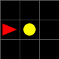
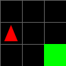

Benchmark
LangSLAM: A Text-only Benchmark for Belief Update & Mapping
LangSLAM is a text-driven SLAM (Simultaneous Localization and Mapping) benchmark designed to evaluate the spatial reasoning and belief update capabilities of Large Language Models (LLMs) under partial observability.
Benchmark Overview
Unlike traditional embodied benchmarks that focus on instruction following or visual navigation, LangSLAM isolates the specific cognitive skill of building and maintaining a globally consistent internal map. By reading a sequence of egocentric action-observation text logs from a symbolic MiniGrid world, the model must, like a classical Bayesian filter, integrate fragmented local evidence to infer the global structure of the environment.
This task evaluates not just geometric reasoning, but the model's ability to maintain a robust Internal Belief State in the presence of noise, uncertainty, and data loss.
Core Elements
In the LangSLAM grid world, the agent interacts with two primary types of objects, representing the challenges of static mapping and dynamic state tracking.
Flags (Static Landmarks)
Flags serve as fixed landmarks within the environment. They are the core reference points for the localization task. The model must deduce the precise global (X, Y) coordinates of each flag by integrating the robot's movement history with local, relative observations (e.g., "Flag observed 2 steps forward, 1 step left"). This tests the model's capacity for geometric transformation and global consistency.
Boxes (Movable Objects)
Boxes introduce dynamic complexity to the environment. Unlike fixed flags, boxes can be pushed, picked up, or relocated by the robot during its trajectory. This requires the model to perform temporal reasoning, updating its memory of object locations in real time to determine where a box effectively ended up, rather than relying solely on initial observations.
Simulating Reality: Noise & Robustness
To rigorously test LLM performance under realistic non-ideal conditions, LangSLAM introduces three noise processes that model physical uncertainty and sensor failure.
Null Execution
A command is logged by the system, but the actuators fail to engage, resulting in zero physical displacement. In the example, the agent moves one step, pauses for one frame, then continues.
Slippage and Drift
Due to surface slippage, the robot performs additional unlogged steps, causing the true pose to drift from the estimated path after an action. In the example, a single logged step advances two cells within one frame.

Trajectory Discontinuity
To simulate the kidnapped robot scenario where the agent is physically displaced by external forces, we delete contiguous subsequences of 5 to 10 time steps. This results in sudden pose jumps and gaps in the observation stream. In the example, the agent moves one step, teleports, then walks two steps.
Sensor Noise
This simulates imperfections in perception (e.g., quantization errors or visual blur). We inject stochastic perturbations into the reported coordinates of objects within the 5x5 local view. The model must infer the most probable location from noisy data rather than trusting a single snapshot implicitly.